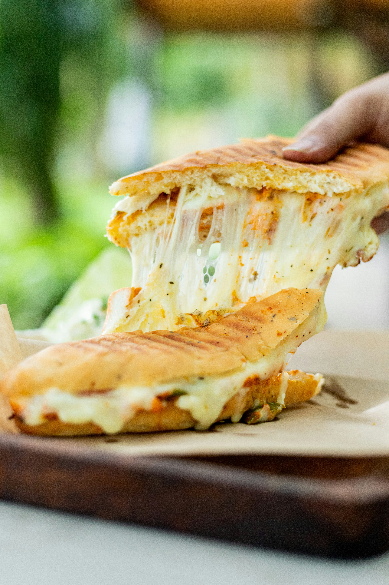

Back to Home
Grilled Cheese Sandwich

Description
A grilled cheese, toasted cheese sandwich, cheese toastie (UK) or
cheese jaffle (AU) is a hot cheese sandwich typically prepared by placing cheese between slices of bread and cooking
with butter or mayonnaise on a frying pan, griddle, or pie iron, until the bread browns and the cheese melts.
Despite its name, it is rarely prepared through grilling.
Ingredients
- 4 slices white bread
- 3 tablespoons butter, divided
- 2 slices Cheddar cheese
Steps
- Gather all ingredients.
- Preheat a nonstick skillet over medium heat. Generously butter one side each bread slice.
- Place 1 slice bread, butter-side down, in the hot skillet; top with 1 slice cheese.
- Place 1 slice bread, butter-side up, on top cheese.
- Cook until lightly browned on one side; flip and continue cooking until cheese is melted.
- Repeat with remaining bread and cheese slices. Serve and enjoy!